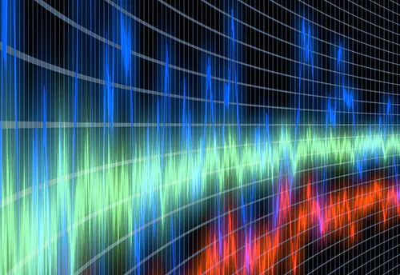
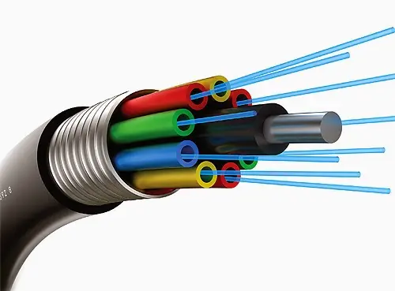
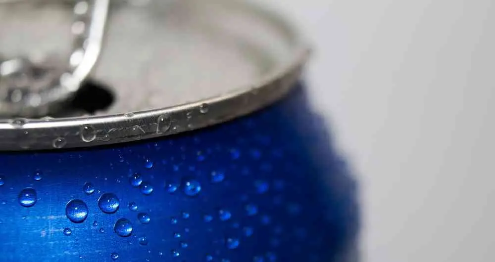

// EXPERIENCIA Y TRAYECTORIA
Laboratorio de radio
Una primera aproximación al trabajo remunerado en relación de dependencia. Fue la puerta de entrada al mundo de las comunicaciones, en este caso ondas de radio.
9 de abril de 2007 · 1 minuto de lectura

La característica más llamativa de este método de comunicación, es la forma en la cual lo hace. La radiocomunicación es la tecnología que posibilita la transmisión de señales mediante la modulación (de su frecuencia o amplitud) de ondas electromagnéticas. Estas ondas no requieren un medio físico de transporte, por lo que pueden propagarse a través del vacío. Una onda de radio se origina cuando una partícula cargada (por ejemplo, un electrón) se excita a una frecuencia situada en la zona de radiofrecuencia (RF) del espectro electromagnético. Cuando la onda de radio actúa sobre un conductor eléctrico (la antena), induce en él un movimiento de la carga eléctrica (corriente eléctrica) que puede ser transformado en señales de audio u otro tipo de señales portadoras de información.
Estudios relacionados

High Level Team | HLT
Un equipo de alto nivel orientado a la investigación y desarrollo de nuevos productos y tecnologías.
Octubre 2007
GPON | Fibra óptica
Conexión para el consumo masivo y entre sitios importantes que requieren comunicación con alta transferencia de información.
Marzo 2010
CTO Cofundador
Bebidas frías en 30 segundos. Basado en inteligencia artificiar e implementado con aprendizaje por refuerzo.
Ago. 2020High Level Team | HLT
// EL SIGUIENTE PASO
TU PRODUCTO.
SU PRÓXIMA ETAPA.
Una primera conversación para entender el desafío y ver si puedo aportar valor.
↗ Hablemos de tu proyecto